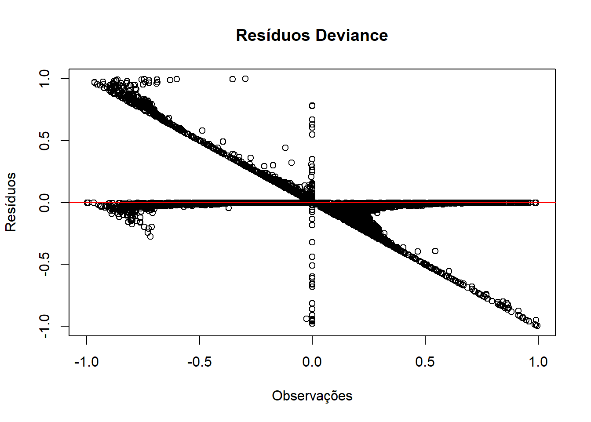
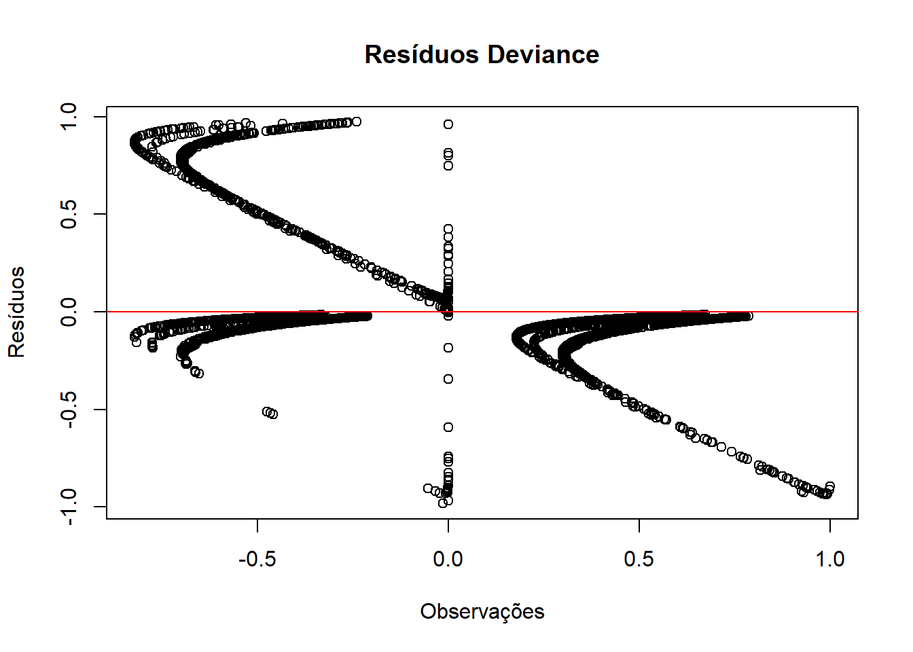
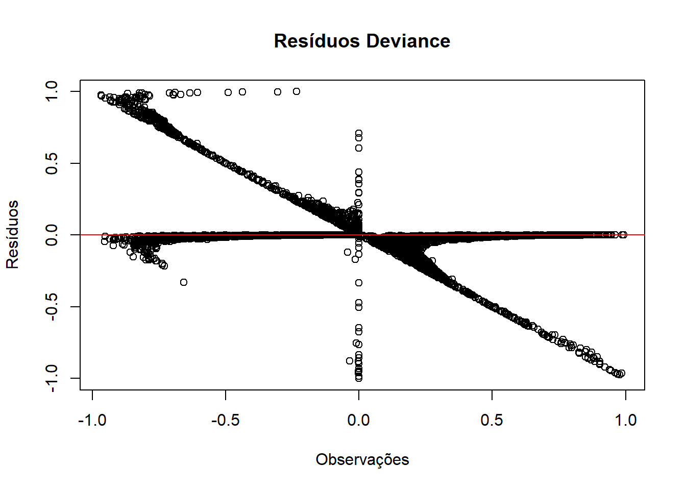
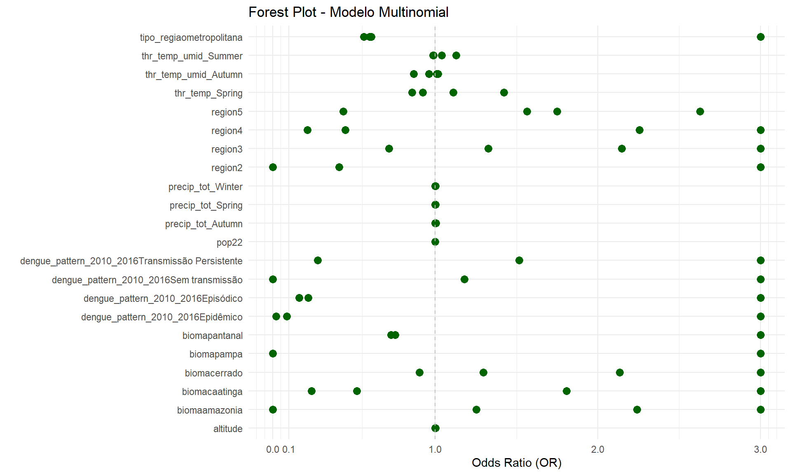

ℹ Using "','" as decimal and "'.'" as grouping mark. Use `read_delim()` for more control.
Rows: 5570 Columns: 11
── Column specification ────────────────────────────────────────────────────────
Delimiter: ";"
chr (4): tipo_regiao, bioma, koppen, dengue_pattern_2010_2016
dbl (7): muni_code, region, altitude, pop10, pop22, prop_residuo, prop_esgot
ℹ Use `spec()` to retrieve the full column specification for this data.
ℹ Specify the column types or set `show_col_types = FALSE` to quiet this message.
New names:
Rows: 5570 Columns: 31
── Column specification
──────────────────────────────────────────────────────── Delimiter: "," chr
(1): dengue_pattern dbl (30): ...1, geocode, temp_med_Autumn, umid_med_Autumn,
precip_tot_Autumn...
ℹ Use `spec()` to retrieve the full column specification for this data. ℹ
Specify the column types or set `show_col_types = FALSE` to quiet this message.
• `` -> `...1`
clima_org_model_17_22_season <- clima_org_model_17_22_season[, -1] # Exclui a primeira colunacolnames(clima_org_model_17_22_season)[1] <-"muni_code"# Renomeia a nova primeira coluna# Juntandodet_17_22 <-full_join(banco_determinantes, clima_org_model_17_22_season , by ="muni_code")det_17_22 <- det_17_22 [, !names(det_17_22) %in%c("pop10")]## Removendo os bancos para a nálise ficar mais leveremove(banco_determinantes)remove(clima_org_model_17_22_season)
Análise 2017-2022
Análise do período de 2017-2022, primeira parte de uma série temporal da classificação de padrões de transmissão de todos os municípios brasileiros para dengue.
1.Carregando os dados
# Converter variáveis numéricas com vírgula decimal e categorizar as variáveis de textodet_17_22 <- det_17_22 %>%mutate(across(where(~all(grepl("^[0-9,.]+$", .))), ~as.numeric(gsub(",", ".", .))),across(where(is.character), as.factor))# Visão geral dos dadossummary(det_17_22)
muni_code region tipo_regiao
Min. :1100015 Min. :1.000 metropolitana : 445
1st Qu.:2512126 1st Qu.:2.000 nao metropolitana:5125
Median :3146280 Median :3.000
Mean :3253591 Mean :2.898
3rd Qu.:4119190 3rd Qu.:4.000
Max. :5300108 Max. :5.000
bioma altitude koppen pop22
amazonia : 503 Min. : 1.67 Aw :1337 Min. : 836
caatinga :1096 1st Qu.: 222.60 Cfa :1138 1st Qu.: 5282
cerrado :1063 Median : 427.60 As : 892 Median : 11096
mata atlantica:2739 Mean : 451.24 BSh : 420 Mean : 37298
pampa : 160 3rd Qu.: 650.83 Cwa : 407 3rd Qu.: 24615
pantanal : 9 Max. :1601.42 Cfb : 405 Max. :12200180
(Other): 971
prop_residuo prop_esgot dengue_pattern_2010_2016
Min. : 0.00 Min. : 0.00 Epidêmico : 642
1st Qu.: 54.33 1st Qu.: 12.85 Episódico :1722
Median : 74.08 Median : 38.03 Episódico/Epidêmico :2907
Mean : 70.21 Mean : 42.27 Sem transmissão : 286
3rd Qu.: 89.22 3rd Qu.: 70.44 Transmissão Persistente: 13
Max. :100.00 Max. :100.00
dengue_pattern temp_med_Autumn umid_med_Autumn
Epidêmico : 726 Min. :13.31 Min. :55.97
Episódico :1841 1st Qu.:19.60 1st Qu.:69.82
Episódico/Epidêmico :2821 Median :22.82 Median :76.33
Sem transmissão : 150 Mean :22.26 Mean :75.44
Transmissão Persistente: 32 3rd Qu.:25.21 3rd Qu.:80.94
Max. :27.54 Max. :91.30
NA's :3 NA's :3
precip_tot_Autumn thr_temp_Autumn thr_umid_Autumn thr_prec_Autumn
Min. : 0.0 Min. : 0.00 Min. : 0.00 Min. : 0.00
1st Qu.: 547.0 1st Qu.:42.88 1st Qu.:77.00 1st Qu.:13.17
Median : 937.8 Median :83.00 Median :89.00 Median :21.50
Mean :1132.1 Mean :68.07 Mean :81.99 Mean :25.03
3rd Qu.:1476.3 3rd Qu.:92.00 3rd Qu.:91.50 3rd Qu.:30.00
Max. :6371.6 Max. :92.00 Max. :92.00 Max. :87.67
thr_temp_umid_Autumn temp_med_Spring umid_med_Spring precip_tot_Spring
Min. : 0.00 Min. :15.51 Min. :44.44 Min. : 0.0
1st Qu.:39.33 1st Qu.:21.99 1st Qu.:65.81 1st Qu.: 824.2
Median :56.33 Median :24.86 Median :71.05 Median :1549.0
Mean :59.19 Mean :24.38 Mean :70.28 Mean :1364.3
3rd Qu.:88.79 3rd Qu.:26.72 3rd Qu.:76.48 3rd Qu.:1850.6
Max. :92.00 Max. :31.08 Max. :89.49 Max. :3225.9
NA's :3 NA's :3
thr_temp_Spring thr_umid_Spring thr_prec_Spring thr_temp_umid_Spring
Min. : 0.00 Min. : 0.00 Min. : 0.00 Min. : 0.00
1st Qu.:72.67 1st Qu.:60.83 1st Qu.:19.67 1st Qu.:46.00
Median :90.00 Median :77.33 Median :31.42 Median :60.33
Mean :78.98 Mean :70.80 Mean :29.11 Mean :59.21
3rd Qu.:91.00 3rd Qu.:89.33 3rd Qu.:38.83 3rd Qu.:76.00
Max. :91.00 Max. :91.00 Max. :79.50 Max. :91.00
temp_med_Summer umid_med_Summer precip_tot_Summer thr_temp_Summer
Min. :18.20 Min. :57.99 Min. : 0 Min. : 0.00
1st Qu.:23.48 1st Qu.:73.76 1st Qu.:1308 1st Qu.:88.67
Median :25.01 Median :77.34 Median :1846 Median :90.17
Mean :24.67 Mean :76.98 Mean :1934 Mean :87.02
3rd Qu.:25.97 3rd Qu.:80.88 3rd Qu.:2449 3rd Qu.:90.17
Max. :28.75 Max. :91.18 Max. :6139 Max. :90.17
NA's :3 NA's :3
thr_umid_Summer thr_prec_Summer thr_temp_umid_Summer temp_med_Winter
Min. : 0.00 Min. : 0.00 Min. : 0.00 Min. :11.63
1st Qu.:82.00 1st Qu.:30.00 1st Qu.:76.17 1st Qu.:18.50
Median :87.83 Median :40.92 Median :85.00 Median :21.97
Mean :83.41 Mean :42.17 Mean :80.38 Mean :21.71
3rd Qu.:90.00 3rd Qu.:52.17 3rd Qu.:89.67 3rd Qu.:25.19
Max. :90.17 Max. :89.33 Max. :90.17 Max. :29.80
NA's :3
umid_med_Winter precip_tot_Winter thr_temp_Winter thr_umid_Winter
Min. :37.88 Min. : 0.0 Min. : 0.00 Min. : 0.00
1st Qu.:53.73 1st Qu.: 106.1 1st Qu.:23.21 1st Qu.:22.00
Median :67.49 Median : 305.2 Median :76.83 Median :74.17
Mean :65.47 Mean : 549.2 Mean :60.58 Mean :58.78
3rd Qu.:77.42 3rd Qu.: 874.3 3rd Qu.:92.00 3rd Qu.:90.67
Max. :89.34 Max. :3263.7 Max. :92.00 Max. :92.00
NA's :3
thr_prec_Winter thr_temp_umid_Winter
Min. : 0.000 Min. : 0.000
1st Qu.: 2.167 1st Qu.: 6.333
Median : 7.000 Median :14.000
Mean :12.092 Mean :30.753
3rd Qu.:20.500 3rd Qu.:52.667
Max. :78.667 Max. :92.000
2. Verificação dos pressupostos
2.1 Multicolinearidade
Cálculo do VIF (Variance Inflation Factor): O VIF foi calculado para cada variável preditora no modelo. Isso foi feito após a remoção de colinearidade redundante e tratamento das variáveis para garantir que todas estejam no formato correto (numérico ou categórico).
Variável dependente: dengue_pattern foi temporariamente convertida para numérica apenas para calcular o VIF. Esse ajuste é feito para facilitar a análise de multicolinearidade.
Detecção e remoção de colinearidade: Usamos o findLinearCombos para remover variáveis redundantes, evitando o problema de “aliasing” no modelo, o que ocorre quando variáveis altamente correlacionadas criam dependência linear.
Intrepretação:
Valores de VIF < 5: São considerados aceitáveis, indicando baixa multicolinearidade.
Valores de VIF entre 5 e 10: Indicariam alguma multicolinearidade, mas ainda podem ser aceitáveis dependendo do contexto.
Valores de VIF > 10: Sugerem multicolinearidade.
Resultados:
Quando todas as variáveis em um cálculo do VIF (Variance Inflation Factor) estão muito acima de 10, isso indica alta multicolinearidade entre as variáveis no seu modelo de regressão. Multicolinearidade pode distorcer os coeficientes das variáveis no modelo, dificultando a interpretação e reduzindo a confiabilidade dos resultados.
## Somente para variáveis numéricas então vamos retirar as categoricas# Remover colunas pelo nomedata <- det_17_22[, !names(det_17_22) %in%c("muni_code","region", "tipo_regiao", "bioma", "koppen")]# Verificando a presença de NAs em todas as variáveis do bancosapply(data, function(x) sum(is.na(x))) #Tem 8 linhas# removendo as linhas com Nadata_clean <- data %>%filter(!if_any(where(is.numeric), is.na))# Identificar e remover variáveis altamente colinearescombo_info <-findLinearCombos(data_clean %>%select(-dengue_pattern))if (length(combo_info$remove) >0) { data_clean <- data_clean[, -combo_info$remove]}# Calcular o VIF para as variáveis vif_values <-vif(lm(as.numeric(dengue_pattern) ~ ., data = data_clean))vif_values
2.2 Independência das observações
Intrepretação:
O valor 0 indica que não foram encontradas linhas duplicadas em data_clean.
# Verificar se há identificadores duplicadosduplicated_rows <-sum(duplicated(det_17_22))duplicated_rows
2.3 Tamanho amostral adequado
Interpretação:
Em regressão logística multinomial, cada categoria da variável dependente precisa de um número suficiente de observações para garantir que o modelo possa estimar os parâmetros de forma confiável. Geralmente, recomenda-se pelo menos 10 a 20 observações por parâmetro estimado em cada categoria.
O código retornou valor 0 nas observações, indicando que não foram encontrados outliers com resíduos padronizados maiores que 2 ou menores que -2. Isso sugere que o modelo se ajustou bem aos dados e não há observações que se desviem significativamente do padrão previsto pelo modelo.
# Ajustar o modelo multinomialmultinom_model <-multinom(dengue_pattern ~ ., data = det_17_22)# Calcular resíduos padronizadosresiduals <-residuals(multinom_model, type ="pearson")# Identificar outliers com resíduos padronizados acima de 2 ou abaixo de -2outliers <-which(abs(residuals) >2)length(outliers)##OUTRO# Obter os resíduos deviance para cada observaçãodeviance_residuals <-residuals(multinom_model, type ="deviance")# Ponto de corte padrão da literaturacutoff <-2.0influential_points <-which(abs(deviance_residuals) > cutoff)print(data[influential_points, ])
3. Ajuste do modelo de regressão logística multinomial
Interpretação:
Para cada categoria (em relação à referência “Episódico/Epidêmico”), o modelo estima coeficientes (Coefficients) para cada variável preditora. Esses coeficientes representam o efeito de cada variável sobre a probabilidade de estar nas categorias Sem transmissão, Episódico, Epidêmico e Tranmissão Persistente, em comparação com Episódico/Epidêmico.
# Remover colunas pelo nomedet_17_22 <- det_17_22[, !names(det_17_22) %in%c("muni_code")]det_17_22$region <-as.factor(det_17_22$region)# removendo as linhas com Nadet_17_22 <- det_17_22%>%filter(!if_any(where(is.numeric), is.na))# Definir a categoria de referência para todas as variáveis categóricasdet_17_22$dengue_pattern <-relevel(det_17_22$dengue_pattern, ref ="Episódico/Epidêmico") # variável dependente# Variáveis independentessummary(det_17_22)
region tipo_regiao bioma altitude
1: 450 metropolitana : 442 amazonia : 503 Min. : 1.67
2:1791 nao metropolitana:5125 caatinga :1096 1st Qu.: 222.93
3:1668 cerrado :1063 Median : 427.75
4:1191 mata atlantica:2736 Mean : 451.42
5: 467 pampa : 160 3rd Qu.: 650.94
pantanal : 9 Max. :1601.42
koppen pop22 prop_residuo prop_esgot
Aw :1337 Min. : 836 Min. : 0.00 Min. : 0.00
Cfa :1138 1st Qu.: 5282 1st Qu.: 54.33 1st Qu.: 12.84
As : 891 Median : 11095 Median : 74.06 Median : 38.02
BSh : 420 Mean : 37311 Mean : 70.21 Mean : 42.27
Cwa : 407 3rd Qu.: 24636 3rd Qu.: 89.22 3rd Qu.: 70.46
Cfb : 405 Max. :12200180 Max. :100.00 Max. :100.00
(Other): 969
dengue_pattern_2010_2016 dengue_pattern
Epidêmico : 641 Episódico/Epidêmico :2819
Episódico :1722 Epidêmico : 725
Episódico/Epidêmico :2905 Episódico :1841
Sem transmissão : 286 Sem transmissão : 150
Transmissão Persistente: 13 Transmissão Persistente: 32
temp_med_Autumn umid_med_Autumn precip_tot_Autumn thr_temp_Autumn
Min. :13.31 Min. :55.97 Min. : 236.7 Min. : 0.00
1st Qu.:19.60 1st Qu.:69.82 1st Qu.: 547.6 1st Qu.:43.00
Median :22.82 Median :76.33 Median : 938.4 Median :83.00
Mean :22.26 Mean :75.44 Mean :1132.7 Mean :68.11
3rd Qu.:25.21 3rd Qu.:80.94 3rd Qu.:1476.5 3rd Qu.:92.00
Max. :27.54 Max. :91.30 Max. :6371.6 Max. :92.00
thr_umid_Autumn thr_prec_Autumn thr_temp_umid_Autumn temp_med_Spring
Min. :28.17 Min. : 5.50 Min. : 0.00 Min. :15.51
1st Qu.:77.00 1st Qu.:13.17 1st Qu.:39.50 1st Qu.:21.99
Median :89.00 Median :21.50 Median :56.33 Median :24.86
Mean :82.03 Mean :25.04 Mean :59.22 Mean :24.38
3rd Qu.:91.50 3rd Qu.:30.00 3rd Qu.:88.83 3rd Qu.:26.72
Max. :92.00 Max. :87.67 Max. :92.00 Max. :31.08
umid_med_Spring precip_tot_Spring thr_temp_Spring thr_umid_Spring
Min. :44.44 Min. : 29.4 Min. : 4.50 Min. : 1.667
1st Qu.:65.81 1st Qu.: 825.6 1st Qu.:72.67 1st Qu.:60.833
Median :71.05 Median :1549.3 Median :90.00 Median :77.333
Mean :70.28 Mean :1365.1 Mean :79.02 Mean :70.841
3rd Qu.:76.48 3rd Qu.:1850.6 3rd Qu.:91.00 3rd Qu.:89.333
Max. :89.49 Max. :3225.9 Max. :91.00 Max. :91.000
thr_prec_Spring thr_temp_umid_Spring temp_med_Summer umid_med_Summer
Min. : 0.00 Min. : 1.667 Min. :18.20 Min. :57.99
1st Qu.:19.75 1st Qu.:46.167 1st Qu.:23.48 1st Qu.:73.76
Median :31.50 Median :60.333 Median :25.01 Median :77.34
Mean :29.12 Mean :59.238 Mean :24.67 Mean :76.98
3rd Qu.:38.83 3rd Qu.:76.000 3rd Qu.:25.97 3rd Qu.:80.88
Max. :79.50 Max. :91.000 Max. :28.75 Max. :91.18
precip_tot_Summer thr_temp_Summer thr_umid_Summer thr_prec_Summer
Min. : 301.5 Min. :13.83 Min. :34.50 Min. : 7.833
1st Qu.:1309.1 1st Qu.:88.67 1st Qu.:82.00 1st Qu.:30.000
Median :1847.1 Median :90.17 Median :87.83 Median :41.000
Mean :1935.4 Mean :87.07 Mean :83.45 Mean :42.193
3rd Qu.:2449.3 3rd Qu.:90.17 3rd Qu.:90.00 3rd Qu.:52.167
Max. :6138.5 Max. :90.17 Max. :90.17 Max. :89.333
thr_temp_umid_Summer temp_med_Winter umid_med_Winter precip_tot_Winter
Min. :13.83 Min. :11.63 Min. :37.88 Min. : 4.765
1st Qu.:76.17 1st Qu.:18.50 1st Qu.:53.73 1st Qu.: 106.305
Median :85.00 Median :21.97 Median :67.49 Median : 305.376
Mean :80.43 Mean :21.71 Mean :65.47 Mean : 549.526
3rd Qu.:89.67 3rd Qu.:25.19 3rd Qu.:77.42 3rd Qu.: 874.515
Max. :90.17 Max. :29.80 Max. :89.34 Max. :3263.720
thr_temp_Winter thr_umid_Winter thr_prec_Winter thr_temp_umid_Winter
Min. : 0.3333 Min. : 0.00 Min. : 0.000 Min. : 0.000
1st Qu.:23.3333 1st Qu.:22.00 1st Qu.: 2.167 1st Qu.: 6.333
Median :76.8333 Median :74.17 Median : 7.000 Median :14.000
Mean :60.6095 Mean :58.81 Mean :12.099 Mean :30.769
3rd Qu.:92.0000 3rd Qu.:90.67 3rd Qu.:20.500 3rd Qu.:52.667
Max. :92.0000 Max. :92.00 Max. :78.667 Max. :92.000
region tipo_regiao bioma altitude
1: 450 nao metropolitana:5125 mata atlantica:2736 Min. : 1.67
2:1791 metropolitana : 442 amazonia : 503 1st Qu.: 222.93
3:1668 caatinga :1096 Median : 427.75
4:1191 cerrado :1063 Mean : 451.42
5: 467 pampa : 160 3rd Qu.: 650.94
pantanal : 9 Max. :1601.42
koppen pop22 prop_residuo prop_esgot
Aw :1337 Min. : 836 Min. : 0.00 Min. : 0.00
Cfa :1138 1st Qu.: 5282 1st Qu.: 54.33 1st Qu.: 12.84
As : 891 Median : 11095 Median : 74.06 Median : 38.02
BSh : 420 Mean : 37311 Mean : 70.21 Mean : 42.27
Cwa : 407 3rd Qu.: 24636 3rd Qu.: 89.22 3rd Qu.: 70.46
Cfb : 405 Max. :12200180 Max. :100.00 Max. :100.00
(Other): 969
dengue_pattern_2010_2016 dengue_pattern
Episódico/Epidêmico :2905 Episódico/Epidêmico :2819
Epidêmico : 641 Epidêmico : 725
Episódico :1722 Episódico :1841
Sem transmissão : 286 Sem transmissão : 150
Transmissão Persistente: 13 Transmissão Persistente: 32
temp_med_Autumn umid_med_Autumn precip_tot_Autumn thr_temp_Autumn
Min. :13.31 Min. :55.97 Min. : 236.7 Min. : 0.00
1st Qu.:19.60 1st Qu.:69.82 1st Qu.: 547.6 1st Qu.:43.00
Median :22.82 Median :76.33 Median : 938.4 Median :83.00
Mean :22.26 Mean :75.44 Mean :1132.7 Mean :68.11
3rd Qu.:25.21 3rd Qu.:80.94 3rd Qu.:1476.5 3rd Qu.:92.00
Max. :27.54 Max. :91.30 Max. :6371.6 Max. :92.00
thr_umid_Autumn thr_prec_Autumn thr_temp_umid_Autumn temp_med_Spring
Min. :28.17 Min. : 5.50 Min. : 0.00 Min. :15.51
1st Qu.:77.00 1st Qu.:13.17 1st Qu.:39.50 1st Qu.:21.99
Median :89.00 Median :21.50 Median :56.33 Median :24.86
Mean :82.03 Mean :25.04 Mean :59.22 Mean :24.38
3rd Qu.:91.50 3rd Qu.:30.00 3rd Qu.:88.83 3rd Qu.:26.72
Max. :92.00 Max. :87.67 Max. :92.00 Max. :31.08
umid_med_Spring precip_tot_Spring thr_temp_Spring thr_umid_Spring
Min. :44.44 Min. : 29.4 Min. : 4.50 Min. : 1.667
1st Qu.:65.81 1st Qu.: 825.6 1st Qu.:72.67 1st Qu.:60.833
Median :71.05 Median :1549.3 Median :90.00 Median :77.333
Mean :70.28 Mean :1365.1 Mean :79.02 Mean :70.841
3rd Qu.:76.48 3rd Qu.:1850.6 3rd Qu.:91.00 3rd Qu.:89.333
Max. :89.49 Max. :3225.9 Max. :91.00 Max. :91.000
thr_prec_Spring thr_temp_umid_Spring temp_med_Summer umid_med_Summer
Min. : 0.00 Min. : 1.667 Min. :18.20 Min. :57.99
1st Qu.:19.75 1st Qu.:46.167 1st Qu.:23.48 1st Qu.:73.76
Median :31.50 Median :60.333 Median :25.01 Median :77.34
Mean :29.12 Mean :59.238 Mean :24.67 Mean :76.98
3rd Qu.:38.83 3rd Qu.:76.000 3rd Qu.:25.97 3rd Qu.:80.88
Max. :79.50 Max. :91.000 Max. :28.75 Max. :91.18
precip_tot_Summer thr_temp_Summer thr_umid_Summer thr_prec_Summer
Min. : 301.5 Min. :13.83 Min. :34.50 Min. : 7.833
1st Qu.:1309.1 1st Qu.:88.67 1st Qu.:82.00 1st Qu.:30.000
Median :1847.1 Median :90.17 Median :87.83 Median :41.000
Mean :1935.4 Mean :87.07 Mean :83.45 Mean :42.193
3rd Qu.:2449.3 3rd Qu.:90.17 3rd Qu.:90.00 3rd Qu.:52.167
Max. :6138.5 Max. :90.17 Max. :90.17 Max. :89.333
thr_temp_umid_Summer temp_med_Winter umid_med_Winter precip_tot_Winter
Min. :13.83 Min. :11.63 Min. :37.88 Min. : 4.765
1st Qu.:76.17 1st Qu.:18.50 1st Qu.:53.73 1st Qu.: 106.305
Median :85.00 Median :21.97 Median :67.49 Median : 305.376
Mean :80.43 Mean :21.71 Mean :65.47 Mean : 549.526
3rd Qu.:89.67 3rd Qu.:25.19 3rd Qu.:77.42 3rd Qu.: 874.515
Max. :90.17 Max. :29.80 Max. :89.34 Max. :3263.720
thr_temp_Winter thr_umid_Winter thr_prec_Winter thr_temp_umid_Winter
Min. : 0.3333 Min. : 0.00 Min. : 0.000 Min. : 0.000
1st Qu.:23.3333 1st Qu.:22.00 1st Qu.: 2.167 1st Qu.: 6.333
Median :76.8333 Median :74.17 Median : 7.000 Median :14.000
Mean :60.6095 Mean :58.81 Mean :12.099 Mean :30.769
3rd Qu.:92.0000 3rd Qu.:90.67 3rd Qu.:20.500 3rd Qu.:52.667
Max. :92.0000 Max. :92.00 Max. :78.667 Max. :92.000
# Modelo com tudomultinom_model <-multinom(dengue_pattern ~ ., data = det_17_22)
# weights: 280 (220 variable)
initial value 8959.740859
iter 10 value 6392.619641
iter 20 value 5977.191619
iter 30 value 5813.295862
iter 40 value 5646.545606
iter 50 value 5349.435789
iter 60 value 5150.731260
iter 70 value 4998.473721
iter 80 value 4855.296066
iter 90 value 4681.504134
iter 100 value 4388.276945
final value 4388.276945
stopped after 100 iterations
Interpretação do Teste de razão de verossimilhança:
# Pseudo R²pR2(multinom_model)# Teste de razão de verossimilhançalrtest(multinom_model)
5. Seleção de variáveis
Interpretação:
# Seleção stepwise#step_model <- step(multinom_model, direction = "both")#summary(step_model)# Seleção stepwise a partir do modelo nulo# Criar o modelo inicial (nulo com region e pop22)null_model <-multinom(dengue_pattern ~ region + pop22, data = det_17_22)# Criar o modelo completo (com todas as variáveis preditoras adicionais)full_formula <-as.formula(paste("dengue_pattern ~ region + pop22 +", paste(setdiff(names(det_17_22), c("dengue_pattern", "region", "pop22")), collapse =" + ")))full_model <-multinom(full_formula, data = det_17_22)# Aplicar a seleção stepwise a partir do modelo nulo para o modelo completostep_model <-step(null_model, scope =list(lower = null_model, upper = full_model), direction ="both", trace =TRUE)# Resumo do modelo final selecionadosummary(step_model)
5.1 Matriz de confusão do stepwise
class(step_model)step_model <-na.omit(step_model)# previsoesprevisoes <-predict(step_model, newdata = det_17_22)# matriz de confusão comparando as previsões com os valores reaismatriz_confusao <-confusionMatrix(previsoes, det_17_22$dengue_pattern)print(matriz_confusao)
6. Análise de resíduos
# Resíduos devianceresiduals_deviance <-residuals(step_model, type ="deviance")plot(residuals_deviance, main ="Resíduos Deviance", ylab ="Resíduos", xlab ="Observações")abline(h =0, col ="red")### OUTRO# Calcular os resíduos devianceresiduals_deviance <-residuals(step_model, type ="deviance")# Função para gerar um QQ plot com envelopeqqPlot(residuals_deviance, main ="QQ Plot dos Resíduos com Envelope de Confiança",xlab ="Quantis Teóricos",ylab ="Resíduos",id =FALSE, # Desativar a identificação de pontosenvelope =0.95) # Adicionar envelope de confiança de 95%
Reanalizando modelo final
Nessa parte vamos olhar para o modelo final e rodar manualmente cada colocando variaveis em grupo e criar uma tabela de AIC e Acurácia, para ve se o modelo se enxuga. Depois gerar o gráfico de ODDS. Ratio.
# weights: 120 (92 variable)
initial value 8959.740859
iter 10 value 5797.596570
iter 20 value 5567.177140
iter 30 value 4869.846156
iter 40 value 4224.226019
iter 50 value 3720.250326
iter 60 value 3598.982572
iter 70 value 3433.397194
iter 80 value 3378.358479
iter 90 value 3349.817174
iter 100 value 3318.675906
final value 3318.675906
stopped after 100 iterations
model_final <-na.omit(model_final)# previsoesprevisoes <-predict(model_final, newdata = det_17_22)# matriz de confusão comparando as previsões com os valores reaismatriz_confusao <-confusionMatrix(previsoes, det_17_22$dengue_pattern)print(matriz_confusao)
Confusion Matrix and Statistics
Reference
Prediction Episódico/Epidêmico Epidêmico Episódico
Episódico/Epidêmico 2380 312 480
Epidêmico 88 405 0
Episódico 351 2 1342
Sem transmissão 0 0 19
Transmissão Persistente 0 6 0
Reference
Prediction Sem transmissão Transmissão Persistente
Episódico/Epidêmico 3 0
Epidêmico 0 15
Episódico 114 0
Sem transmissão 33 0
Transmissão Persistente 0 17
Overall Statistics
Accuracy : 0.7503
95% CI : (0.7387, 0.7616)
No Information Rate : 0.5064
P-Value [Acc > NIR] : < 2.2e-16
Kappa : 0.5779
Mcnemar's Test P-Value : NA
Statistics by Class:
Class: Episódico/Epidêmico Class: Epidêmico
Sensitivity 0.8443 0.55862
Specificity 0.7107 0.97873
Pos Pred Value 0.7496 0.79724
Neg Pred Value 0.8165 0.93675
Prevalence 0.5064 0.13023
Detection Rate 0.4275 0.07275
Detection Prevalence 0.5703 0.09125
Balanced Accuracy 0.7775 0.76867
Class: Episódico Class: Sem transmissão
Sensitivity 0.7290 0.220000
Specificity 0.8747 0.996493
Pos Pred Value 0.7418 0.634615
Neg Pred Value 0.8672 0.978785
Prevalence 0.3307 0.026944
Detection Rate 0.2411 0.005928
Detection Prevalence 0.3250 0.009341
Balanced Accuracy 0.8018 0.608246
Class: Transmissão Persistente
Sensitivity 0.531250
Specificity 0.998916
Pos Pred Value 0.739130
Neg Pred Value 0.997294
Prevalence 0.005748
Detection Rate 0.003054
Detection Prevalence 0.004131
Balanced Accuracy 0.765083
# Resíduos devianceresiduals_deviance <-residuals(model_final, type ="deviance")plot(residuals_deviance, main ="Resíduos Deviance", ylab ="Resíduos", xlab ="Observações")abline(h =0, col ="red")

Modelo nulo
## Modelo nulom1 <-multinom(formula = dengue_pattern ~ region + pop22 , data = det_17_22)
# weights: 35 (24 variable)
initial value 8959.740859
iter 10 value 5653.084335
iter 20 value 5350.371755
iter 30 value 4947.538451
iter 40 value 4903.853257
iter 50 value 4867.727632
iter 60 value 4867.537240
iter 70 value 4867.465738
final value 4867.462969
converged
m1 <-na.omit(m1)# previsoesprevisoes_m1 <-predict(m1, newdata = det_17_22)# matriz de confusão comparando as previsões com os valores reaismatriz_confusao_m1 <-confusionMatrix(previsoes_m1, det_17_22$dengue_pattern)print(matriz_confusao_m1)
Confusion Matrix and Statistics
Reference
Prediction Episódico/Epidêmico Epidêmico Episódico
Episódico/Epidêmico 2101 459 811
Epidêmico 66 215 2
Episódico 652 47 1028
Sem transmissão 0 0 0
Transmissão Persistente 0 4 0
Reference
Prediction Sem transmissão Transmissão Persistente
Episódico/Epidêmico 32 0
Epidêmico 0 24
Episódico 118 0
Sem transmissão 0 0
Transmissão Persistente 0 8
Overall Statistics
Accuracy : 0.6021
95% CI : (0.5891, 0.615)
No Information Rate : 0.5064
P-Value [Acc > NIR] : < 2.2e-16
Kappa : 0.3064
Mcnemar's Test P-Value : NA
Statistics by Class:
Class: Episódico/Epidêmico Class: Epidêmico
Sensitivity 0.7453 0.29655
Specificity 0.5262 0.98100
Pos Pred Value 0.6174 0.70033
Neg Pred Value 0.6682 0.90304
Prevalence 0.5064 0.13023
Detection Rate 0.3774 0.03862
Detection Prevalence 0.6113 0.05515
Balanced Accuracy 0.6358 0.63878
Class: Episódico Class: Sem transmissão
Sensitivity 0.5584 0.00000
Specificity 0.7807 1.00000
Pos Pred Value 0.5572 NaN
Neg Pred Value 0.7816 0.97306
Prevalence 0.3307 0.02694
Detection Rate 0.1847 0.00000
Detection Prevalence 0.3314 0.00000
Balanced Accuracy 0.6696 0.50000
Class: Transmissão Persistente
Sensitivity 0.250000
Specificity 0.999277
Pos Pred Value 0.666667
Neg Pred Value 0.995680
Prevalence 0.005748
Detection Rate 0.001437
Detection Prevalence 0.002156
Balanced Accuracy 0.624639
# Resíduos devianceresiduals_deviance_m1 <-residuals(m1, type ="deviance")plot(residuals_deviance_m1, main ="Resíduos Deviance", ylab ="Resíduos", xlab ="Observações")abline(h =0, col ="red")

Modelo nulo + regiao
coloca uma a uma
m2 <-multinom(formula = dengue_pattern ~ region + pop22 + dengue_pattern_2010_2016 + bioma + altitude + tipo_regiao, data = det_17_22)
# weights: 90 (68 variable)
initial value 8959.740859
iter 10 value 5878.325468
iter 20 value 4827.654105
iter 30 value 4025.697810
iter 40 value 3876.271362
iter 50 value 3787.852642
iter 60 value 3698.419023
iter 70 value 3664.183717
iter 80 value 3660.661850
iter 90 value 3652.698391
iter 100 value 3651.144304
final value 3651.144304
stopped after 100 iterations
m2 <-na.omit(m2)# previsoesprevisoes_m2 <-predict(m2, newdata = det_17_22)# matriz de confusão comparando as previsões com os valores reaismatriz_confusao_m2 <-confusionMatrix(previsoes_m2, det_17_22$dengue_pattern)print(matriz_confusao_m2)
Confusion Matrix and Statistics
Reference
Prediction Episódico/Epidêmico Epidêmico Episódico
Episódico/Epidêmico 2302 307 500
Epidêmico 100 411 0
Episódico 417 5 1333
Sem transmissão 0 0 8
Transmissão Persistente 0 2 0
Reference
Prediction Sem transmissão Transmissão Persistente
Episódico/Epidêmico 2 0
Epidêmico 0 16
Episódico 132 0
Sem transmissão 16 0
Transmissão Persistente 0 16
Overall Statistics
Accuracy : 0.7325
95% CI : (0.7207, 0.7441)
No Information Rate : 0.5064
P-Value [Acc > NIR] : < 2.2e-16
Kappa : 0.5485
Mcnemar's Test P-Value : NA
Statistics by Class:
Class: Episódico/Epidêmico Class: Epidêmico
Sensitivity 0.8166 0.56690
Specificity 0.7056 0.97604
Pos Pred Value 0.7400 0.77989
Neg Pred Value 0.7895 0.93770
Prevalence 0.5064 0.13023
Detection Rate 0.4135 0.07383
Detection Prevalence 0.5588 0.09466
Balanced Accuracy 0.7611 0.77147
Class: Episódico Class: Sem transmissão
Sensitivity 0.7241 0.106667
Specificity 0.8513 0.998523
Pos Pred Value 0.7064 0.666667
Neg Pred Value 0.8620 0.975825
Prevalence 0.3307 0.026944
Detection Rate 0.2394 0.002874
Detection Prevalence 0.3390 0.004311
Balanced Accuracy 0.7877 0.552595
Class: Transmissão Persistente
Sensitivity 0.500000
Specificity 0.999639
Pos Pred Value 0.888889
Neg Pred Value 0.997117
Prevalence 0.005748
Detection Rate 0.002874
Detection Prevalence 0.003233
Balanced Accuracy 0.749819
# Resíduos devianceresiduals_deviance_m2 <-residuals(m2, type ="deviance")plot(residuals_deviance_m2, main ="Resíduos Deviance", ylab ="Resíduos", xlab ="Observações")abline(h =0, col ="red")
# weights: 85 (64 variable)
initial value 8959.740859
iter 10 value 5927.471630
iter 20 value 5620.467522
iter 30 value 4793.281474
iter 40 value 3908.725815
iter 50 value 3667.911038
iter 60 value 3492.982140
iter 70 value 3452.704638
iter 80 value 3434.066401
iter 90 value 3416.143979
iter 100 value 3412.047163
final value 3412.047163
stopped after 100 iterations
m3 <-na.omit(m3)# previsoesprevisoes_m3 <-predict(m3, newdata = det_17_22)# matriz de confusão comparando as previsões com os valores reaismatriz_confusao_m3 <-confusionMatrix(previsoes_m3, det_17_22$dengue_pattern)print(matriz_confusao_m3)
Confusion Matrix and Statistics
Reference
Prediction Episódico/Epidêmico Epidêmico Episódico
Episódico/Epidêmico 2360 318 514
Epidêmico 90 400 0
Episódico 369 4 1310
Sem transmissão 0 0 17
Transmissão Persistente 0 3 0
Reference
Prediction Sem transmissão Transmissão Persistente
Episódico/Epidêmico 3 0
Epidêmico 0 17
Episódico 116 0
Sem transmissão 31 0
Transmissão Persistente 0 15
Overall Statistics
Accuracy : 0.7394
95% CI : (0.7276, 0.7509)
No Information Rate : 0.5064
P-Value [Acc > NIR] : < 2.2e-16
Kappa : 0.5585
Mcnemar's Test P-Value : NA
Statistics by Class:
Class: Episódico/Epidêmico Class: Epidêmico
Sensitivity 0.8372 0.55172
Specificity 0.6961 0.97790
Pos Pred Value 0.7387 0.78895
Neg Pred Value 0.8065 0.93577
Prevalence 0.5064 0.13023
Detection Rate 0.4239 0.07185
Detection Prevalence 0.5739 0.09107
Balanced Accuracy 0.7667 0.76481
Class: Episódico Class: Sem transmissão
Sensitivity 0.7116 0.206667
Specificity 0.8688 0.996862
Pos Pred Value 0.7282 0.645833
Neg Pred Value 0.8591 0.978438
Prevalence 0.3307 0.026944
Detection Rate 0.2353 0.005569
Detection Prevalence 0.3232 0.008622
Balanced Accuracy 0.7902 0.601764
Class: Transmissão Persistente
Sensitivity 0.468750
Specificity 0.999458
Pos Pred Value 0.833333
Neg Pred Value 0.996936
Prevalence 0.005748
Detection Rate 0.002694
Detection Prevalence 0.003233
Balanced Accuracy 0.734104
# Resíduos devianceresiduals_deviance_m3 <-residuals(m3, type ="deviance")plot(residuals_deviance_m3, main ="Resíduos Deviance", ylab ="Resíduos", xlab ="Observações")abline(h =0, col ="red")

Gerando gráfico Odds Ratio
Agora com modelo com melhor AIC e acurácia
Or e IC95%
# Obter os coeficientes do modelocoeficientes <-summary(model_final)$coefficientserro_padrao <-summary(model_final)$standard.errors# Calcular OR, IC 95% e p-valoresOR <-exp(coeficientes)IC_inf <-exp(coeficientes -1.96* erro_padrao)IC_sup <-exp(coeficientes +1.96* erro_padrao)p_valor <-2* (1-pnorm(abs(coeficientes / erro_padrao)))# Criar tabela com OR, IC 95% e p-valortabela_resultado <-cbind(OR, IC_inf, IC_sup, p_valor)# Arredondar para 2 casas decimaistabela_resultado <-round(tabela_resultado, 2)# Exibir a tabelatabela_resultado
# geral# Extraindo os coeficientes do modelo multinomial com intervalo de confiançatidy_model <- broom::tidy(model_final, conf.int =TRUE)# Filtrando apenas os coeficientes das variáveis preditoras (removendo a categoria base)tidy_model <- tidy_model %>%filter(term !="(Intercept)")# Convertendo os coeficientes log-OR para OR e arredondando para 3 casas decimaistidy_model <- tidy_model %>%mutate(estimate =round(pmin(exp(estimate), 3), 3), # Limita os valores acima de 3 para 3conf.low =round(pmax(exp(conf.low), 0), 3), # Garante que conf.low nunca seja menor que 0conf.high =round(pmin(exp(conf.high), 3), 3) # Limita os valores acima de 3 para 3 )# Definindo os valores fixos do eixo Xx_breaks <-c(0, 0.1, 1, 2, 3) # Apenas 1 casa decimalx_labels <-format(round(x_breaks, 1), nsmall =1) # Formata com 1 casa decimal# Criando o gráfico de forest plotggplot(tidy_model, aes(x = estimate, y = term)) +geom_point(color ="darkgreen", size =3) +# Pontos dos ORsgeom_errorbarh(aes(xmin = conf.low, xmax = conf.high), height =0.2, color ="darkgreen") +# Barras de errogeom_vline(xintercept =1, linetype ="dashed", color ="gray") +# Linha vertical em OR = 1scale_x_continuous(breaks = x_breaks,labels = x_labels,limits =c(0, 3) # Limita a escala até 3 ) +labs(x ="Odds Ratio (OR)", y ="", title ="Forest Plot - Modelo Multinomial") +theme_minimal()
Warning: Removed 20 rows containing missing values or values outside the scale range
(`geom_errorbarh()`).

Tabela 1 - Final
# Extrair coeficientes e intervalos de confiança (IC 95%)results <- broom::tidy(model_final, exponentiate =TRUE, conf.int =TRUE) %>%rename(Variável = term, Categoria = y.level, OR = estimate, Lower_CI = conf.low, Upper_CI = conf.high) %>%filter(Variável !="(Intercept)") # Remover intercepto para melhor visualização# Criar a coluna de intervalo de confiança (IC95%)results <- results %>%mutate(IC95 =sprintf("[%.2f - %.2f]", Lower_CI, Upper_CI), # Formatar IC95% com 2 casas decimaisOR =sprintf("%.2f", OR) # Formatar OR com 2 casas decimais ) %>%select(Variável, Categoria, OR, IC95) # Selecionar apenas colunas relevantes# Calcular p-valores manualmente a partir dos z-scoresz_scores <-summary(model_final)$coefficients /summary(model_final)$standard.errorsp_values <-2* (1-pnorm(abs(z_scores)))# Converter p-values em um dataframe formatado corretamentep_values_df <-as.data.frame(p_values) %>% tibble::rownames_to_column(var ="Variável") %>%pivot_longer(cols =-Variável, names_to ="Categoria", values_to ="p_valor") %>%mutate(p_valor =ifelse(p_valor <0.001, "<0.001", sprintf("%.3f", p_valor)) # Arredondar p-valor para 3 casas decimais sem notação científica )# Juntar ORs, IC95% e p-valoresfinal_results <- results %>%left_join(p_values_df, by =c("Variável", "Categoria"))# **Reformatar os dados para que `dengue_pattern` fique como colunas**tabela_larga <- final_results %>%pivot_wider(names_from = Categoria, # Transformar as categorias de dengue em colunasvalues_from =c(OR, IC95, p_valor), # Usar OR, IC95% e p-valor como valoresnames_glue ="{Categoria}_{.value}"# Nome das colunas formatado corretamente )# Exportar a tabela para CSVwrite.csv2(tabela_larga, "table1_17_22.csv", row.names =FALSE)# Criar tabela formatada com gt()tabela_larga %>%gt() %>%tab_header(title ="Tabela 1: Modelo de Regressão Logística Multinomial",subtitle ="Odds Ratio, Intervalo de Confiança 95% e p-valor para dengue_pattern") %>%cols_label(Variável ="Variável") %>%tab_spanner(label ="Epidêmico", columns =starts_with("Epidêmico_")) %>%tab_spanner(label ="Episódico", columns =starts_with("Episódico_")) %>%tab_spanner(label ="Sem transmissão", columns =starts_with("Sem transmissão_")) %>%tab_spanner(label ="Transmissão Persistente", columns =starts_with("Transmissão Persistente_")) %>%fmt_missing(columns =everything(), missing_text ="—") # Substituir valores ausentes por traço
Warning: Since gt v0.6.0 the `fmt_missing()` function is deprecated and will soon be
removed.
• Use the `sub_missing()` function instead.
This warning is displayed once every 8 hours.
Tabela 1: Modelo de Regressão Logística Multinomial
Odds Ratio, Intervalo de Confiança 95% e p-valor para dengue_pattern